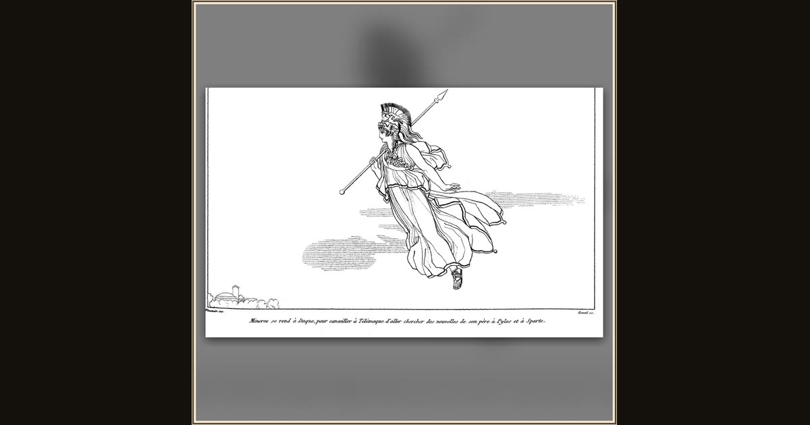

Athena descends to Ithaca
John Flaxman (designer); Pierre Réveil (engraver) · Flaxman design published by 1810; Réveil engraving c. 1835 · Wikimedia Commons
Flaxman works in pure outline: helmet plumed, long spear couched, cloak streaming as Athena darts down toward the tiny domed town at lower left - Ithaca. The engraved French line under the plate sends her there to rouse Telemachus, not, despite the old title,